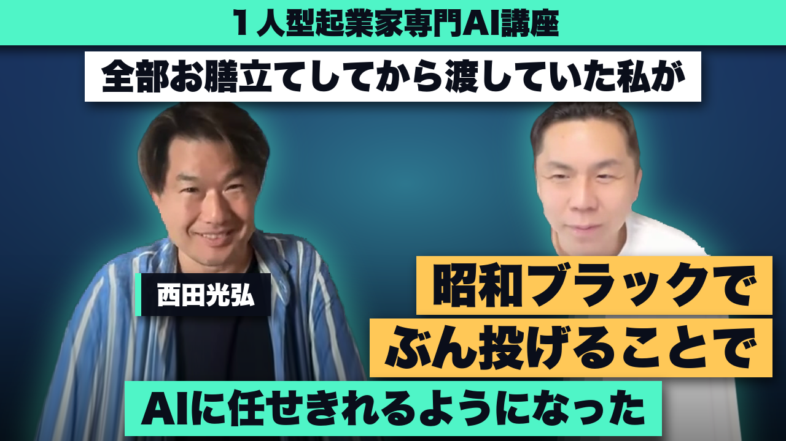
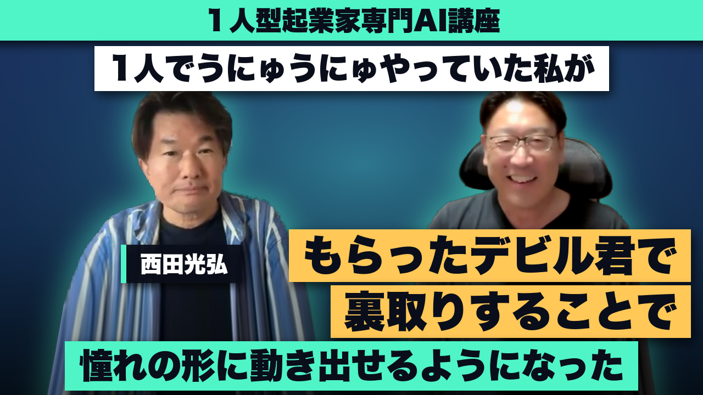
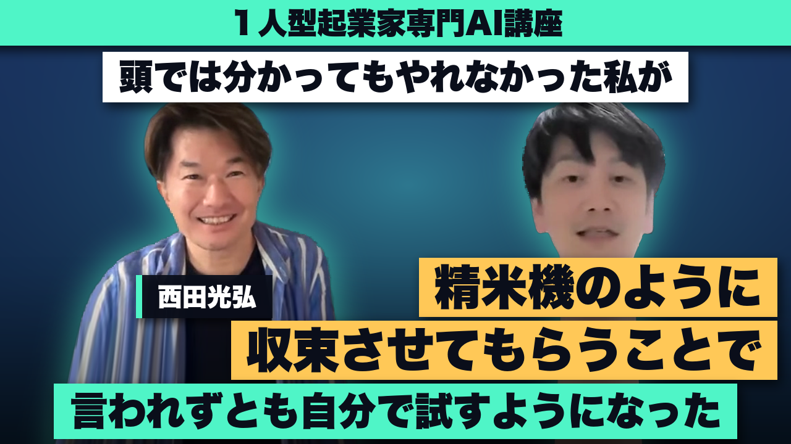
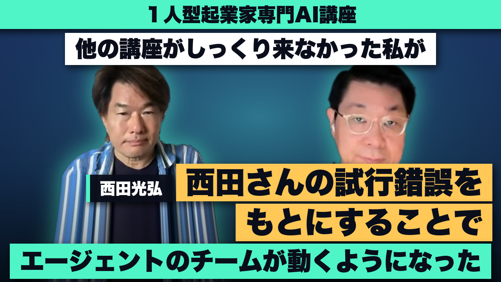
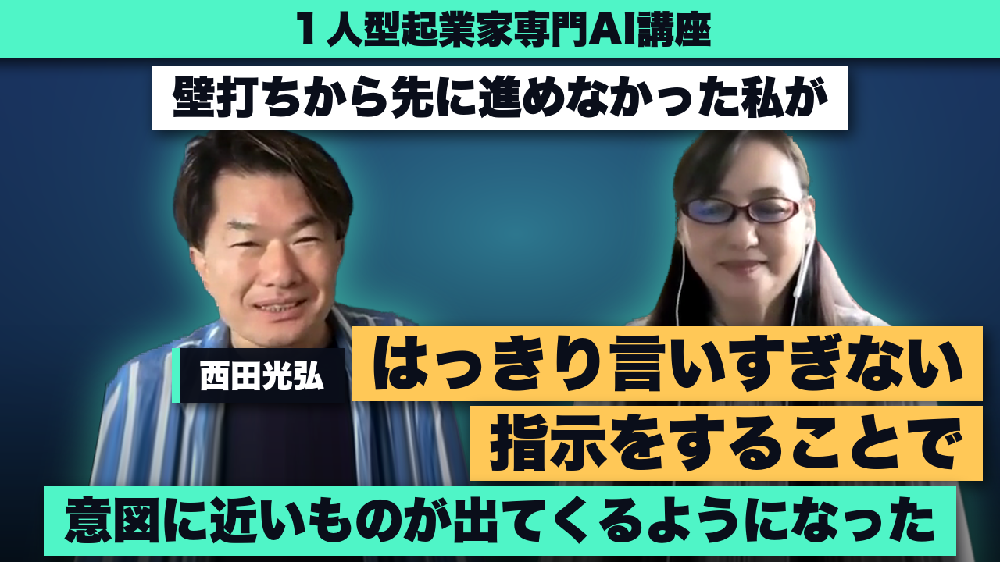
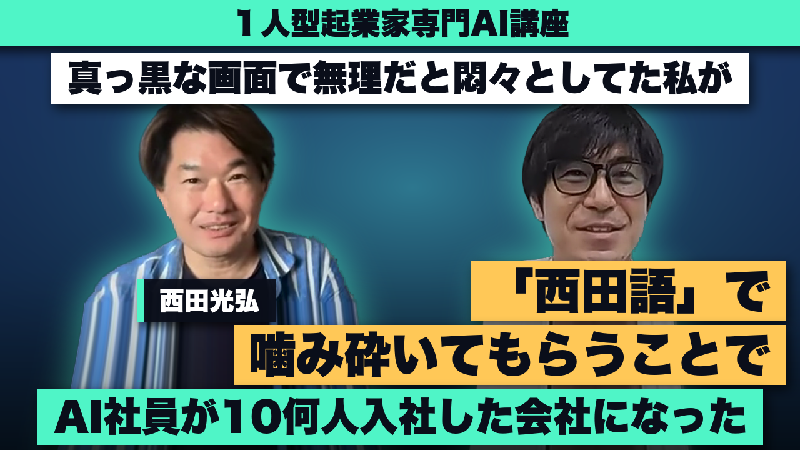
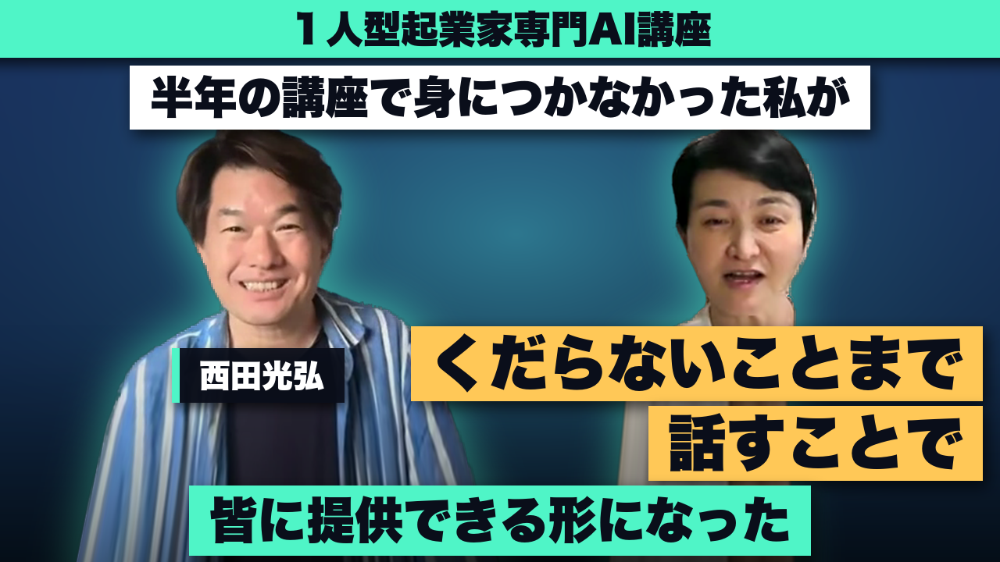
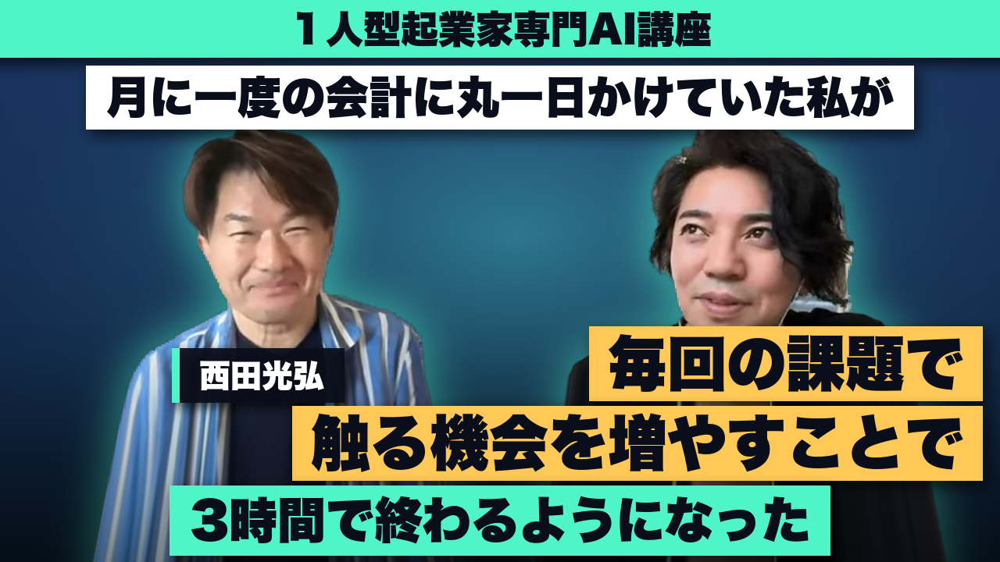
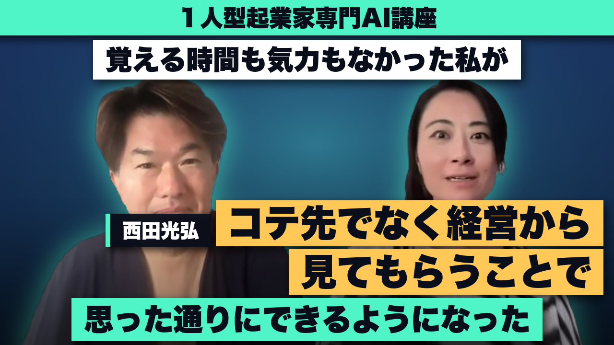
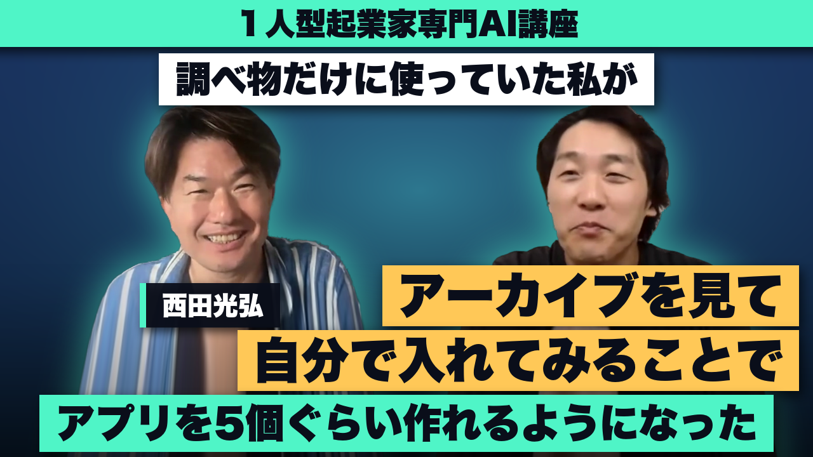

割引が適応されるのは、残り…
※カウントがゼロになった時点で募集は締切られます。このページにもアクセスできなくなるので注意してください。（登録から 5日後の 0時・仮／ゼロで 04x EdPWoFiPcMNJ）
どうも、西田です。『第0章』はいかがでしたか？
ここまでで見ていただいたのは、AI の使い方ではないです。トンカチとノコギリの使い方の、入口です。
何のために覚えるかというと、家を建てるためです。ログハウスを建てるためです。
1人型起業でいう家は、経営です。
道具の使い方が楽しかった、で終わってしまう人が、いま、たくさん出ています。
そこで終わらない側に立ってほしくて、4回に整えました。やってもらうと、こういうことが起きます。
経営コンサル 20年・60業種・1,000人超。1ヶ月で 211人に売れた人、利益が 5倍になった人、年商 1,000万円が 3年で 6,000万円になった人、赤字が 6ヶ月で利益体質に変わった人 ── 経営で結果を出してきた延長線上に、AI を乗せています。
1人当たりの粗利 2,000万円に届いた人には、はっきりした特徴があります。
研究して、創って、作って、売って、サポートして、改善する。この商売の基本サイクルが、速い。それだけです。アイデアが出てから世に出るまでが速い。売ってから、お客さんの声が返るまでが速い。返ってきた声で直すのが速い。だから、当たりを引く回数が多い。
そして、その人たちには共通点があります。全員、西田経営メソッドを使っていました。
業種はばらばらです。ラーメン店も、撮影も、コンサルも、士業も、物販も。22業種で同じことが起きました。共通しているのは業種ではありません。サイクルを速くしたことです。
ただ、以前は、これができるのは一部の人だけでした。人を雇い、組織を持てる人だけの話でした。1人でやっている限り、作る手も、売る手も、サポートする手も、全部あなたの手ひとつだったからです。
それが、AI社員で、あなたにもできるようになりました。調べる・書く・作る・返すを、AI社員が持ちます。あなたは決めて、責任を取って、お客さんと会う。同じ 1人のままで、サイクルが何倍にも速く回ります。出し続けられるのは、この速さがあって初めてです。
西田経営メソッドは 20年・60業種・1,000人超で結果が出ています。そこに AI を乗せたのが、この 3日間です。
現在進行形で、自分の会社の経営を AI社員に回させています。何体動かしたか、何時間触ったかの話ではありません。20年・60業種で使ってきた経営の型を、そのまま AI社員に持たせている、という話です。
その前に、経営コンサルティングを 20年。60業種・1,000人超を見てきました。その延長線上に、AI を乗せています。
AI の技術を売っている人ではないです。経営の急所に AI を乗せている人が、話しています。
→→ つまり？ 4時間は道具で効率化します。残りの 4時間はアタックです。商品を作る・名簿を集める・売る ── ここに使います。前倒しで庶務を片づけると、明日の仕事を 1日早くやっただけになります。
浮いた 4時間で、明日の納品や庶務を前倒しでやってしまう人がほとんどです。それだと、明日の仕事を 1日早くやっただけ。アタックが得意な人が「AI なんちゃら作ったよ」と、あなたのお客さんに向かって行きます。
→→ つまり？ 憲法（会社案内）・記憶（日報）・技能（業務マニュアル）・規則（就業規則）・控え（稟議書控え）。人を採って育てるときにやっていたことを、そのまま AI にやります。これで 1体です。部署の数だけ増やせます。
この 1体を、部署の数だけ増やしていきます。人を雇わないまま、手が増えます。浮いた時間は全部、商品を出す側に。
→→ つまり？ 渡すためには、自分の考えを言葉にしないといけません。言葉にしたぶんだけ、自分の頭の中が片づきます。渡すほど賢くなる、というのはそういうことなんですね。
→→ つまり？ 貯まるのは、お金と、新しいお客さんと、作ったコンテンツです。売れなかったものも、コンテンツとして手元に残ります。だから、出した数だけ元手が増えていきます。
8時間の仕事が、4時間で終わります。
浮いた 4時間で、いつもの納品や庶務や会計を、明日の分まで前倒しでやってしまう人がほとんどです。それだと、明日の仕事を 1日早くやっただけです。
浮いた 4時間は、アタックに使ってください。商品を作る。名簿を集める。売る。
成長期は、差をつけなくていいです。6割の出来で出して、出し続けてください。
売れなかったものも、Cash にはならなくても、Customer と Content で貯まります。次の 1本を出すときの元手になります。
ここからが、3DAYS の中身です。仮：4回の基礎動画を DAY1〜3 に束ねた
ここまでで、道具は揃います。そこから先が、経営です。4回で身につけて、その先の、出し続ける経営に踏み出してください。
この回を終えると：「これは AI ですごい経営ができそうだ」と思えてしまう状態。
道具の前に、魂。AI に自分の会社を知らせるところから
この回を終えると：subagent を 1体作り、SendMessage で指示し、2体連携を体験し、自分の実業務を AI 組織に翻訳した設計図を持っている状態。
1人のままで、組織を持つ
この回を終えると：5層モデルを理解し、配下に memory と skill を装備し、衝突を解く手順を持ち、git 7コマンドを回し始めている状態。
ここまでが、トンカチとノコギリ。工具箱がそろう
この回を終えると：AI 組織を継続教育サイクルに乗せ、4つの道から 1つを自分で選べる状態。何を自分で判断し、何を AI に任せ、何を外部に委ねるかを 3軸で言語化できる状態。
道具が使えるようになった。ここから先が、経営そのものを変える側。出し続ける側に回って、1本目を出す
値段の話に入る前に、上乗せする特典を 2つ、お渡しします。
どちらも、4ヶ月目以降も PRO を続けている限り、そのまま使い続けられます。
特典は 4ヶ月目以降も PRO を続ける限り使えます。
第1期に参加してくれた人たちから、すでに 11本の動画レビューと 8名の経営の声が届いています。
「AI が使えるようになった」だけの声は、載せていません。この講座の何が効いて、そうなったのか まで、ご本人が語ってくれたところを、そのまま入れています。

AI言われてるけど、何をするものかよく分からない。こっちが全部お膳立てして「こうなるんだ」と分かってから委託しようとしていた。人間からAIになっても同じで、AIに任せりゃいいものを、自分で調べて順番を作ってから渡そうとしていた。僕自身がボトルネックになっていた。西田さんの講座で出てきたのが、「調べずに、とりあえずやれ」っていう昭和ブラック的なところと、任されたやつが順番と手順を考えるんだ、っていう"ぶん投げマインド"。今まで、これがすごく申し訳なくて、こんな事言ったら嫌われる、あいつ丸投げしてきやがってこの野郎って思われたらやだな、と思っていた。AIに対しても、そう思っていた。心理的ハードルがだいぶ下がった。「頼むよ、できないことないよね」で行けるようになった。俺がAIを学ばなくていい。AIがやってくれればいい。機械マニアじゃないから、そこまで深く知る必要もない

AI社員に憧れてはいた。ただ、相談したAIには「今の君の使い方だったら、エージェントチームは使わん方がいいよ」と言われていた。1人ビジネスで、うにゅうにゅやっていても進まなかった。メルマガの案内で参加。デミル君のやつで話した時に「いいんじゃないの？」と、裏取りをしてもらえたので、じゃあその流れをやっぱりチャレンジしようと思って。エージェントチームをやり始めた。ぐちゃぐちゃになっても、それが経験値。うまくいかない所を「あ、じゃない、こうじゃない」って事故ってためていくのも大事なんだと思って、チャレンジしていく形でやり始めている

AIがいいって世間でもYouTubeでも見てる。頭ではいいって分かっていても、自分ごととして取っかかれない、やれない。それがすごくもどかしかった。ハマってしまうんじゃないかっていう怖さもあった。世間相場で4、50万円する講座を、10万円ちょっとで2〜3ヶ月やってもらえる価格帯。今までの西田さんの経営サポートを見てきたからこそ、噛み砕いてやってくれる、落ちこぼれを作らないだろうという安心感。ご自身で「精米機」とおっしゃっているように、散らかったもの、複雑なものも収束させてくれる。グループレッスンの中でも、うまく捌いておこずけてくれるだろうという期待があって、なんとか飛び込めた。いい意味で裏切られて、丁寧にやっていただいたので理解もできたし、ついていけている。逆にうまくいきすぎたがゆえに、これもあれもやりたいとなって、好奇心にエンジンがかかると、言われずとも自分で調べてどんどん試して、知識も習得するし、探究心も溜まっていく。自分の営業の自動化・業務効率化にも実際取り組み始めた。ビジネスの土台は積み重ねて資産になっているし、売るための動きをすればお金にチャリンと変わりそうな予感が出てきている

対話型AIは満足していた。ただエージェントが気になっていた。自分の代わりに人を動かして、時間を他に使えるのに憧れていた。他の1〜2時間の講座も受けたが、いまいちしっくり来なかった。西田さんが、自分の体験の中から使えるようにと言っていたのが魅力だった。既存の一斉型プログラム・ビデオ講座だと一人一人つまずくところ、事前の1対1の個別対談で、最初に引っかかりがちな部分を手助けしてもらえたので、そこがすごくスムーズだった。西田さんが試行錯誤した部分をもとに、自分は何十分の一かの時間で使えるようになる。実際に設定のところは、正直、数時間・10時間ぐらいはかかった。それで自分のエージェントを作って、さらにサブエージェントも作った。そのチームが今動いている。リサーチ業務・資料整理はかなり自動的にできている。何をチームに任せればいいかが、想像できるようになった

ChatGPTの対話は、周りより使っていた方だった。ただ、そこから先、AIに仕事をさせるところまでは行っていなかった。AI社員の話は聞いていたが、エンジニアやITに詳しい人が先行してやっている感じで、ハードルが高いと思っていた。どういう指示・プロンプトを書いたら何ができるのか、イメージがついていなかった。西田さんに「あんまりはっきり言いすぎない」という指示の仕方を教わった時、結構衝撃で「え、それでいいのか」と思った。ものすごく簡単に指示をしたのに、意外と意図したものと近いものが出てきて、「おお」と思った。エンジニアではなく、ITに特別なスキルがあるわけではない私でも、できる、できそう、と思えるようになった。分からないことは逆に「教えて」と言えば教えてくれる。難しそう、できなさそう、という感覚は、だいぶ緩和した

ChatGPT・Gemini・NotebookLMは触っていたが、ほとんど壁打ちで、実際に手を動かすのは自分だった。社員3人の管理会社で、AIにやらせられたらとずっと思っていたが、Claude Codeを触ってみると真っ黒な画面が出てきて「自分じゃ無理だな」と悶々としていた。講座を受けたい一番の理由でもあるが、専門用語で二の足を踏むところを「西田語」で噛み砕いて導いてくれる。心理的ハードルが下がって「やってみよう」に持っていける。「自分だけが分からないんじゃないか、こんなこと聞いちゃう」というところを、そうじゃないんだよと先行して降りてきてくれる。行動に移すまでが一番大変なところを、引き下げてもらえる。エージェントチームができた実感がある。AIがAIに仕事を振って成果まで持ってくる、優秀な社員さんを採用したのと同じ感覚。毎月の不動産オーナーへの月次レポートを、収支明細・クレーム対応・募集活動、全部AIが1枚のダッシュボードにまとめてくれる。オーナーさんの反響は「今ここまでできるんですね」。欲しいとも思っていなかったレベルのものができた

実は、企業にAIを教えている人だった。使い方は説明できたが、AIに覚えさせて設計させて仕事をさせる面ではどこから手を付けたらいいやら分からなかった。別の半年のお高い講座に入っていたが、一切のサポートがついていない・質問もできない・自分で調べろの形で、全く身につかなかった。西田さんに「魔法のランプのように、こんなのあったらいいなあ、伝えてください」と言われた。「Kindleを読ませて、画面上を流れてページめくりながら全部PDFができないかな」と話し始めたら「できるよ、簡単だよ」となり、その会話を続けて、2時間もかからずプログラムが出来上がってしまった。「こういうことか。くだらないことまで話せばよかったんだ」と気づいた。私のAIが、私の好みを理解して、意図を汲み上げて動くようになってきている。副産物として、全く進んでいなかったお高い方の講座も、2つ3つの宿題があっという間に終わって、追いついたとまでは言えないけれども、卒業制作ぐらいには取りかかれるところまでやってきた。西田さんの方が分かったことによって、そちらも分かった

ChatGPTは仕事に活用していたが、Claude Codeは全く手を付けていなかった。導入も契約の仕方もわからず、YouTubeやGoogleで調べることも全くしていなかった。最初の設定や、「これこれの方がいいよ、あれの方がいいよ」という細かい使い方を教えてもらえたのが、スタートできるきっかけになった。西田さんの経験から聞かせていただいたので、その経験が一番、やっぱり価値だと思っている。加えて毎回課題があるので、忙しい中でも触る機会が増えた。講座に入っていなかったら、絶対に取り組んでいなかった。会計に月1回、丸1日かかっていたのが、翌月やった時には3時間で終わった（Claude Codeで構築に初回2〜3日）。ゴルフ・ダイエット・買い物リストのアプリを作ってみて、いろんなものがアプリにできる、仕事の方でもできる、と先が見えるようになった
Claudeどころか、チャッピーもろくに使っていなかった。業界的にも活用する人が少なかった、というより興味がなかったという言い方が正しい。西田さんから、Claudeを使うことで同じ時間の中で作業効率がちょっと増えるとかそんなレベルじゃなく、革命レベルで変わっていく、という話を聞いた。西田さんが自分の手で触ってこられた経験をもとに、つまずくポイントを事前に言ってくれたり、みんなで話し合いながら問題を潰していく部分を、丁寧にやってくださっている。同じ半年でも、Claudeを触ってAIを使いこなせていく自分にどんどん変わっていくのか、今まで通り分からない部分をちょっと教えてもらうぐらいで終わるのか、この時間の差はとてつもなく開いていくだろうという実感がある

AI秘書導入で30万円、と知り合いが高単価で売り捌いているのを見て、これは半年〜1年後には標準化されると思っていた。何にいつ課金したらいいのかと焦りながら、AIや自動化ツールをやりたいけど、システムを覚える時間も気力もないところに悩んでいた。10年前から西田さんの経営メソッドを知っていた。AIの使い方みたいなコテ先ではなく、「OSを持った人が、具としてAIを使う」ような2階層ぐらい上のところから、経営フェーズを俯瞰的に見せてくれそうだと思った。それなのに、「ホームページを自動で作ってもらえます」で何十万も取るサービスよりずっと価格が手頃で、廃れていくものと上がっていくもの、全体を見ながらやってもらえる。この価格は絶対に安いと思った。心配だったClaude Code Maxも、めちゃくちゃ使えるようになった。環境設定もほとんどClaude Codeを駆使して作ってもらえる使い方が分かった。「絶対にできる」という確信を持って指示を出せるようになった。今まで人に頼んでいたら気を使って「こんなものでもいいか」と思ってやっていたことが、AI相手なので、これが気に入らない、これはこう、と全部やり直せる。ものすごく思った通りにできるようになった。ここまで来ると、次に見えてくるのは、些細なタスクだからいいよねと思ってやっていたことも、全然触らずに任せるサブエージェント、担当者を作っていく AI社員の実装で、もっと手放していけるところ

元々はChatGPTやGeminiで、分からないことを調べる程度だった。別のところで西田さんと会って、「こんなこともできるのか」と思ったのがきっかけ。きっかけがないと、こういうものはなかなかできない。アーカイブが残っていたので、それをよく見て、Obsidianに記録する・Notionに記録する等、ピンポイントで「これやった方がいい」と自分で調べて入れた。西田さんが作った学習マップも、最初は言葉が分からなすぎて抵抗があったが、今もう1回見ると「なるほど、今だったら分かる」となっていて、ちゃんと分かるようになってるんだな、と分かった。タイムウェイバー用データベース、美容室の現状がボタン1つで出るもの、複数銀行口座のキャッシュが見えるもの、アプリだけで5個ぐらい作った。「できるんだ」が衝撃で、これもやりたいあれもやりたい、これもやりたい、とどんどん膨らんできた。会社のパソコン1台だと動いてる時はできないから、もう1個のパソコンも動かして2台で同時に、家に帰ったら家のパソコンでも動かして、3台でClaude Codeを動かすようになり、最初のプランから一番高いプランに変えて、追加までしてしまった、ゲームみたいに
もう 1つ、AI とは別に、経営そのものが変わった方の声です。
以下の 8名は、経営コンサルティングでご一緒した方です。AI 講座に入っている方ではありません。この講座の芯は、20年・60業種・1,000人超の延長線上にあります。
年収1000万円なんて自分には関係ない、遠い話だと感じていたんですが、今は「あ、こうやれば到達するんだ」という実感があります。
30人限定で売れたらいいなと思って売り出したサービスが2日で30人に売れてしまって、枠を増やしていったらいま211人から申し込みがある状態です。1人型経営メソッドを学んで実行するとこんなことが起きるんだ、と驚いています。
どうしてお金が残っていなかったのかがすごく納得できて、だから何をしたらいいのかも見えてきて、着実に実行していくことで結果的に利益が５倍になりました。
西田さんとの出会い当時、年商1,000万円程度の個人事業主でしたが、3年後には6,000万円まで事業を拡大できました。これは、西田さんが描く『1年後、2年後、3年の未来』を見据えた、的確で本質的なアドバイスがあったからこそだと確信しています。表面的なテクニックではなく、ビジネスの本質や成長のフェーズに応じた真実をリアルに教えていただき、無駄な回り道をせずに済みました。
昨年は赤字でしたが、たった6ヶ月でいまの事業のままで利益が残る体質に変わりました。この改善だけでこれから毎年3000〜3500万円くらいは浮いてくると思います。
燃え尽き症候群のように疲れ果てていた自分が、今は、自分の時間や家族との時間を罪悪感なくとれるようになります。ずっと我慢させていた子供との旅行にいくことができました。
長年経営者として漠然とした不安を抱えていましたが、西田式コンサルティングで自分でも気づいていなかった本質的な欲求と向き合うことができました。その結果、自分らしいビジネスモデルが明確になり、収入も向上しました。プライベートでも家族との関係が円満になり、人間として大きく成長できたと感じています。ただ単に経営を実践して身につけるだけでなく、自分自身を深く知り、成長させるための『アイテム』を与えてくれる、唯一無二のコンサルティングです。
1人型経営メソッドを学んで思うのは、これまでずいぶん遠回りしてたなぁということです。小手先のことではなく本質的なことを教えてもらえるので少人数で経営している方は業種問わず皆さん学ぶと良いです。
値段の話です。
先に、この講座の値付けの掟を書いておきます。
この 4回は、1本目を出すための、道具の講座です。道具に元手を使い切らせたら、1本目が出せません。それでは意味がない。【値付けの掟・Mits様の言葉に置き換える】
基準になる数字があります。
3ヶ月のグルコン講座は、142,000円です。1ヶ月あたり、約 47,000円。
今回の 4回の基礎動画は、その講座の 1ヶ月分の中身から、僕と話す時間だけを外したものです。だから 45,000円。
AI経営PRO は、月 5,000円です。3ヶ月分で 15,000円。
足して、定価は 60,000円です。
ただ、この 4回は、第1期の受講生と一緒に、もう撮ってあります。僕の時間が、新しく乗りません。
だから半額にできます。今回は 29,800円（税込） でお渡しします。この値段は、5日間だけです。
元が取れるかどうかは、こう考えてください。
時給 1,000円のスタッフ 2人分。月 30万円が浮きます。29,800円は、初月で戻ります。向こう 2年なら、720万円です。
裏は 1つだけです。4ヶ月目から、AI経営PRO が月 5,000円（税別）かかります。要らなければ、いつでも解約できます。それだけです。
それでも「本当に 29,800円でいいのか」と思われるかもしれません。なので、もう 1つ付けます。
1本目を出す元手として
視聴期間終了後、2日以内に、専用の返金フォームから申請してください。
過去の平均返金率はたったの「 」%（初回のため空欄・和佐は 3〜4%）
条件① DAY1〜3 を最後まで観ること
条件② DAY1〜3 のワーク（1つ 10分）を専用コミュニティに提出していること仮：9/6 の条件（第1回の宿題・昭和ブラック）から和佐型へ
EdPWoFiPcMNJ へ）もしあなたが、AI を毎日触っているのに仕事が減らず、売上が横ばいなら ── これはチャンスです。戦国時代なみのチャンスです。
EdPWoFiPcMNJ へ）この値段は 5日間だけです。第1期と一緒に撮り終えていて、僕の時間が新しく乗らないから出せる値段です。
EdPWoFiPcMNJ へ）アタックが得意な人が、「AI なんちゃら 作ったよ」と、僕らのお客さんに向かって行きます。ひっそりと、僕らのお客さんが、消えていきます。
EdPWoFiPcMNJ へ）AI を使ったビジネスバブルは、あと 2年。AI社員に働かせて、研究して、創って、作って、売って、サポートして、改善する ── 稼ぐ側に回るなら、今年が 1年目です。
EdPWoFiPcMNJ へ）大丈夫です。現在進行形で回している僕自身が、エンジニアではありません。第1回は、AI に「会社案内」を渡す話から入ります。エンジニアの知識は要りません。
合います。経営コンサルとして 60業種・1,000人超を見てきました。飲食・士業・物販・HP制作・映像制作・税理士・会計・内装・デザイン事務所・アフィリエイト・事務機販売・オフィス移転・建設・書店・FC本部・塾・コーチ・パン販売・物産まで、ひととおり手を入れてきました。AIエージェント経営は、業種の上に乗せる話です。業種で相性が分かれる話ではないです。
申込直後から。会員サイトのログイン情報がメールで届きます
4本・各 90〜120分。全部その場で見られます
4ヶ月目から月 5,000円（税別）で続けられます。いつでも解約できます
この商品には付きません。人が付くのは、この商品のあとに続くグルコンです
→ https://change.7years.life/p/Z19zzItBYKgr
この 4回講座は Claude Code Max（月 100ドル）で作られています。Max で観るのがおすすめ。必須ではありません。Max が必須になるのは、この商品のあとに続くグルコンに参加するときです
会員サイト（The Library）でのオンライン視聴です。ダウンロードはできません
カード決済（Stripe）。申込完了のあと、登録メールに会員サイトのログイン情報が届き、4回の基礎動画と PRO の権利がその場から使えます
にしだ拝
実は今、僕は 18歳の冬と近い感覚を持っています。
独学で、一人暮らしで、バイトを掛け持ちしながら、共通一次で 780点を取った冬です。お金も看板も無かった。あったのは、勝てる場所でしか戦わないと決めた頭だけです。仮：出典 context/mits_philosophy.md（原体験）・Mits様が書き直す
立派な理屈で潰れるか、泥をすすって勝ち残るか。AI の時代も、同じだと思っています。
P.S. このレターもカフェでスマホ 1つ。AI 社員が裏で組み立てている
【追伸の生活ネタ・いまどこで何をしながら書いているか・Mits様が入れる】
裏では AI社員が動いていて、僕は上がってきた文を見て「ここはこう」と返すだけです。
文章の下書きも、値段の計算も、レイアウトの調整も、裏では AI社員が動いています。この状態が、道具を覚えたあとの経営です。
P.P.S. AI を使ったビジネスバブルは、あと 2年。今年が 1年目。千載一遇、産業革命レベルのチャンス
AI を使ったビジネスバブルは、あと 2年だと思っています。今年が 1年目です。
来年の末には、「AI経営、やってるよ」と、みんなが言うようになっているはずです。いま動く人には、この 2年がまるまる残っています。
この 2年で稼ぐ側に回った人が、1人当たりの粗利 2,000万円に届きます。
P.P.P.S. 月 30万円×24ヶ月の計算
時給 1,000円のスタッフ 2人分で、月 30万円。24ヶ月で 720万円です。
29,800円の元は、1ヶ月で取れます。あとは、何本のサービスを出すかです。